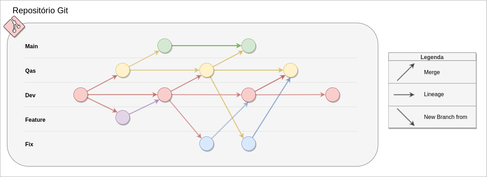

1. Git Flow
Este documento tem o objetivo de consolidar padrões de uso do Git no desenvolvimento de nossa aplicação.
1.1. Motivação
Conforme nomeação do documento, neste projeto usaremos uma adaptação do padrão git flow. Este conceito tem seu fundamento na organização de repositórios, atribuindo políticas de uso e restrições de segurança, sempre com o objetivo de cumprir com as práticas mais adequadas, observadas e aperfeiçoadas ao longo do tempo.
1.2. Políticas de Contribuição
1.2.1. Idioma
Por se tratar de um projeto universitário do Brasil, por padrão, usaremos o idioma nativo, Português. Porém, sabe-se que a área de engenharia de software possui muitos conteúdos e termos em outros idiomas, como o próprio git flow, portanto, também será aceito o uso de terminologias no idioma Inglês.
1.2.2. Ética
O projeto espera do colaborador bom senso na escrita, além de não permitir a produção de contribuições com linguagem ofensiva. A proposta perpassa pela interação direta com a vivência e moradia de pessoas, portanto também assume-se o compromisso de não violar o respeito em qualquer aspecto, sobretudo étnico racial, religião e sexualidade.
1.3. Branches
1.3.1. Fluxo de Branches
Para garantir um fluxo de trabalho contínuo e de forma padronizada, possibilitando o rastreamento das funcionalidades desenvolvidas e facilitando o desenvolvimento contínuo. Os conceitos-chave para implementação da estratégia serão:
Main: Branch de produção, responsável por abrigar o código do último release.Qas: Branch de verificação, representa uma etapa intermediária entre o processo de desenvolvimento e produção. Nesta etapa são realizados os eventuais testes e revisões que antecedem o processo de deploy.Dev: Branch de desenvolvimento, tem a função e prioridade de ser a branch mais atualizada, a qual os desenvolvedores utilizarão como ponto de partida para desenvolver as features branches.Feature: Branch de desenvolvimento de funcionalidade, representa a branch de trabalho sob uma determinada funcionalidade, tarefa, correção de bugs e afins.Fix: Branch de correção, possibilita aos desenvolvedores corrigirem eventuais funcionalidades quebradas.
1.3.1.1. Exemplo do Fluxo de Branches
Abaixo segue a ilustração do fluxo:

Figura 1: Fluxo de Branches
Autor: Calculus Team
1.3.2. Nomenclatura de Branch
É importante que a branch de funcionalidade seja criada seguindo o padrão:
- (número-da-issue)-(nome-da-issue)
Ela deve ser criada a partir da branch de desenvolvimento Dev e deve-se trocar os espaços no nome para '-'.
A branch de correção deve ser criada no padrão:
- fix#(número-da-issue)/nome-da-issue
Ela deve originar-se da branch que apresentou o erro, exceto se for a branch Main. Em caso de exceção, deve-se criar uma branch a partir de Dev.
1.4. Commits
As informações abaixo referem-se aos padrões de escrita de commits do nosso repositório:
1.4.1. Commits Atômicos
Sempre dividir o trabalho em pequenos e significativos commits, de maneira que cada commit implemente apenas uma funcionalidade.
1.4.2. Anatomia do Commit
Na estrutura do padrão convencionado, possuímos as variáveis tipo, número da issue, assunto e corpo. A anatomia do commit deve seguir o formato determinado abaixo:
[tipo](#número da issue): assunto
> corpo
1.4.2.1. Observações
As opções permitidas para o campo
tiposão:
feat: nova funcionalidadedocs: relacionado à documentaçãorefact: refatoração de códigotest: adicionar/refatorar testesfix: correções
As regras para o campo
assuntosão:
- Mensagem curta e sucinta
- Todo texto deve estar sempre em letras minúsculas
As regras para o campo
corposão:
- Máximo de 100 caracteres
- Detalhar minimamente as novas alterações
- Deve conter
o queepor quefoi feito
1.4.3. Exemplo de Commit
Abaixo segue um exemplo de commit feito no padrão do projeto:
[refact](#25): ajustando página de login
Refatoração do método de login pois a execução estava muito lenta.
1.5. Pull Request
1.5.1. Passo 1
Por meio do processo de pull request, realizado no GitHub, toda nova funcionalidade deve ser integrada à branch de desenvolvimento, seguindo o fluxo Feature -> Dev.
1.5.2. Passo 2
Uma vez que a branch de desenvolvimento esteja com todos os artefatos necessários para se fazer deploy, deve-se criar um pull request de Dev -> Qas.
1.5.3. Passo 3
A branch de validação (Qas) deve ser revisada por todos os membros antes de realizar o merge para a branch Main. Desta forma, pode-se adicionar mais uma camada de validação pré-deploy e conferir mais assertividade nas entregas. Após concluir a validação:
Dentre as atividades obrigatórias de um pull request, estão a revisão em pares da entrega e ajuste de eventuais conflitos.
O colaborador que abrir o pull request não pode mergear o mesmo sem revisões de terceiros.
Para publicar uma nova versão estável da aplicação na branch Main, é necessário realizar um Pull Request da branch Qas para a Main. Assim, é garantida a revisão da nova versão do código.
1.5.4. Nomenclatura
Toda branch deve estar necessariamente relacionada a uma funcionalidade ou correção, logo a uma Issue. O nome da branch deve estar em PORTUGUÊS seguindo o padrão:
- Para funcionalidades:
feat#(número-da-issue)/descrição-curta - Para correções:
fix#(número-da-issue)/descrição-curta
Exemplo: feat#75/criar-jornada
1.6. Templates
Aqui estão os templates sugeridos para o guia de contribuição, cobrindo User Stories, Pull Requests e Issues. Esses templates podem ser usados para garantir que as contribuições ao projeto Calculus sejam consistentes e bem documentadas.
1.6.1. User Story Template
1.6.1.1. Título:
US$ - Nome da User Story
1.6.1.2. Descrição:
**Contexto:**
Como [tipo de usuário], eu quero [ação desejada] para [objetivo/motivo].
**Tarefas:**
- [ ] Tarefa 1: Detalhe a primeira tarefa que precisa ser concluída.
- [ ] Tarefa 2: Detalhe a segunda tarefa, se aplicável.
- [ ] Tarefa 3: Detalhe outras tarefas necessárias.
**Critérios de Aceitação:**
- [ ] Critério 1: Detalhe o primeiro critério que deve ser atendido para que a história seja considerada completa.
- [ ] Critério 2: Detalhe o segundo critério, se aplicável.
- [ ] Critério 3: Detalhe qualquer outro critério necessário.
1.6.1.3. Exemplo:
**Título: US04 - Criar Jornada**
Como professor, eu quero criar uma nova jornada educacional para organizar meus conteúdos.
**Tarefas:**
- [ ] Implementar a interface de criação de jornada.
- [ ] Conectar a interface ao backend para salvar a nova jornada.
- [ ] Testar a funcionalidade com diferentes tipos de dados.
**Critérios de Aceitação:**
- [ ] O professor deve poder acessar a funcionalidade de criação de jornada a partir do dashboard.
- [ ] O formulário de criação de jornada deve incluir campos para título, descrição e trilhas associadas.
- [ ] A nova jornada deve ser salva no banco de dados e refletida na interface.
1.6.2. Pull Request Template
1.6.2.1. Título:
[Tipo de mudança] Adiciona/modifica [funcionalidade/bugfix] - #[ID da user story ou issue]
1.6.2.2. Descrição
Este Pull Request implementa/modifica [descrição da funcionalidade ou correção] conforme descrito na user story ou issue #[ID da user story ou issue].
1.6.2.3. Revisão
- [x] Descreve a tarefa principal realizada (ex: Cria interface para a nova funcionalidade).
- [x] Detalha outras alterações relevantes (ex: Implementa validações necessárias).
1.6.2.4. Pre-merge checklist
- [x] O Pull Request refere-se a um único assunto, com um título claro e uma descrição em frases gramaticalmente corretas e completas.
- [x] A branch está atualizada com a branch main.
- [x] Os commits atendem ao padrão especificado na política de contribuição.
1.6.2.5. Exemplo:
**Título:**
[Feature] Adiciona funcionalidade de criação de jornada - #42
**Descrição:**
Este Pull Request implementa a funcionalidade de criação de jornadas para professores, conforme descrito na user story #42.
**Revisão:**
- [x] Cria interface de criação de jornada.
- [x] Implementa validações de unicidade do título.
**Pre-merge checklist:**
- [x] O Pull Request refere-se a um único assunto, um título claro e uma descrição em frases gramaticalmente corretas e completas.
- [x] A branch está atualizada com a branch main.
- [x] Os commits atendem o padrão especificado na política de contribuição.
1.7. Histórico de Versões
| Versão | Data | Descrição | Autore(s) |
|---|---|---|---|
| 1.0 | 04/02/2024 | Criação do documento | Natanael Fernandes |
| 1.1 | 08/07/2024 | Atualização de documento e diagrama | Paulo Gontijo |
| 1.2 | 01/09/2024 | Adição de teamplates | Paulo Gontijo |